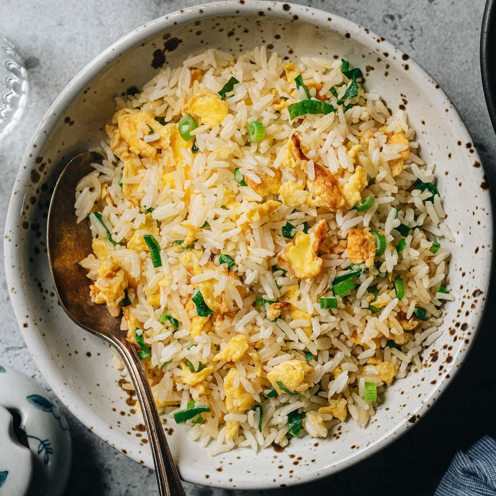

Fried Rice

Description
Fried rice is a classic asian food that many people love. This fried rice recipe is very simple but delicious.
It's also a good way to make use of your leftover food in the fridge.
Ingredients
- 200 grams cooked and chilled white rice
- 2 tablespoon neutral oil
- 2 eggs
- 3 cloves garlic
- 4 scallions
- 1/2 cup of fried shallot
- 1 tablespoon soy sauce
- 1 teaspoon white pepper
- 1 teaspoon MSG
- 100g any leftover meat (optional)
- 50g diced carrot (optional)
- 50g peas (optional)
Steps
- Chop the garlic and the scallions.
- Beat the egg well.
- Get a carbon steel wok and heat it up well.
- Pour the oil and swirl the wok to coat it.
- Add the garlic and the white part of the scallion.
- Add the carrot, peas, and leftover meat if you have it.
- After the aromatic becomes fragrant, put the egg into the wok and punch the egg with the ladle into tiny
pieces.
- Throw the rice into the wok and punch it again with the ladle to avoid clumping.
- Pour the soy sauce onto the side of the wok, and add the white pepper and MSG.
- Keep frying until the rice is lightly charred, then sprinkle it with the green part of scallions.
- Plate the fried rice, and sprinkle it with fried shallots.
- Enjoy!
Home